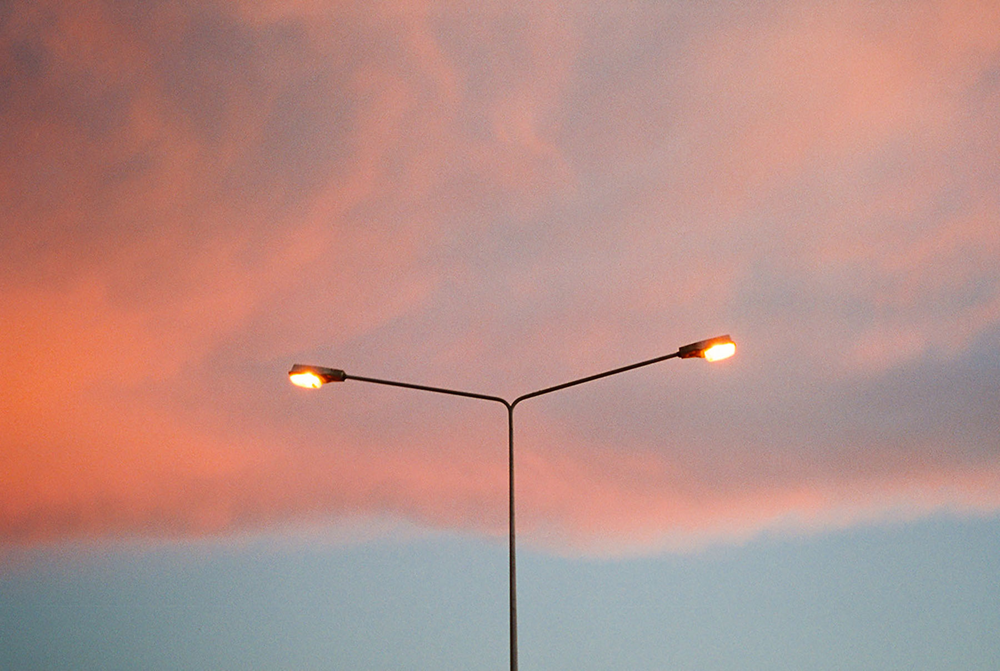

Kurze Meldung
WTF?! Was ist das hier für ein Mist? Dieser Text steht beispielhaft für einen sinnvollen Text, der aber erst noch geschrieben werden muss.
Und das hier ist ein zweiter Absatz mit Abstand zum ersten.
WTF?! Was ist das hier für ein Mist? Dieser Text steht beispielhaft für einen sinnvollen Text, der aber erst noch geschrieben werden muss.
Und das hier ist ein zweiter Absatz mit Abstand zum ersten.
Auf dem Bild sieht man Dinge, die man besser nicht gesehen hätte.
Bildquelle: Internet
Es ist wieder Sommer und in und um Halle brennen die Felder. Jan Möbius hat für die Städtische Zeitung ein Foto geschossen. Link zum Bild